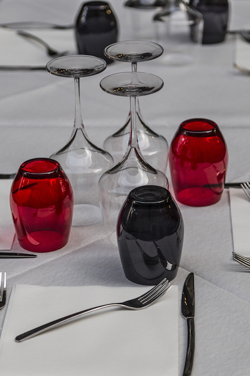

Photo by Francesca Tosolini
Italians enjoy their meals in a very relaxed way, with no rush at all. As a result, the waiter will come to you only if you call him, because he/she considers it impolite to "interrupt" your meal (pasto) every few minutes to check on your status. When you are ready to go, you must ask for the check (conto), as it is never assumed by the waiter when your lunch or dinner is over. Also, always have some cash with you, because some restaurants don’t take credit cards. {This is an excerpt from chapter 3 "Italian cuisine" of the eBook “Italy from the Inside. A native Italian reveals the secrets of traveling in Italy”}